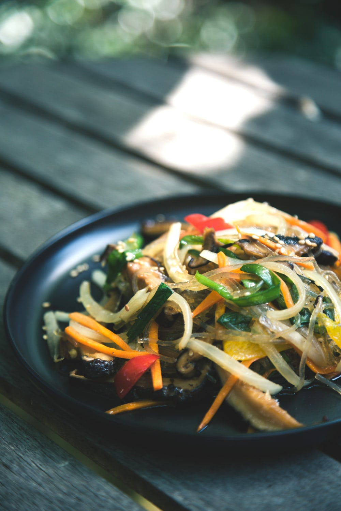

- pepper sauce base
- Soy sauce base
- Representative Korean Food
Soy Sauce Potato Noodles
Ingredients
potato noodles,vegetable,soy sauce,sesame oli.
How to make it
- Boiling the potato noodle in 10 minutes.
- Mix the noodels with vegetable adding soy sauce.
- Enjoy 잡채
